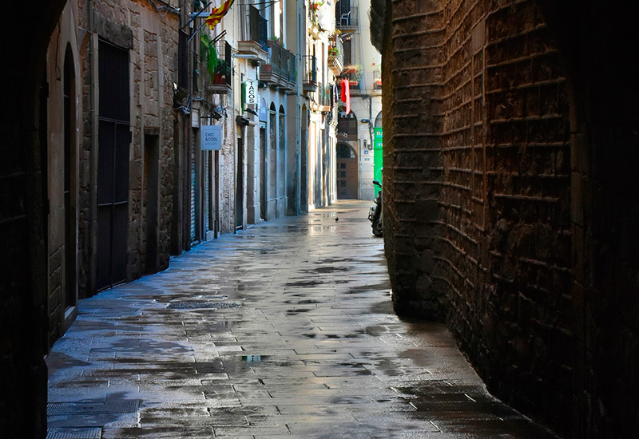
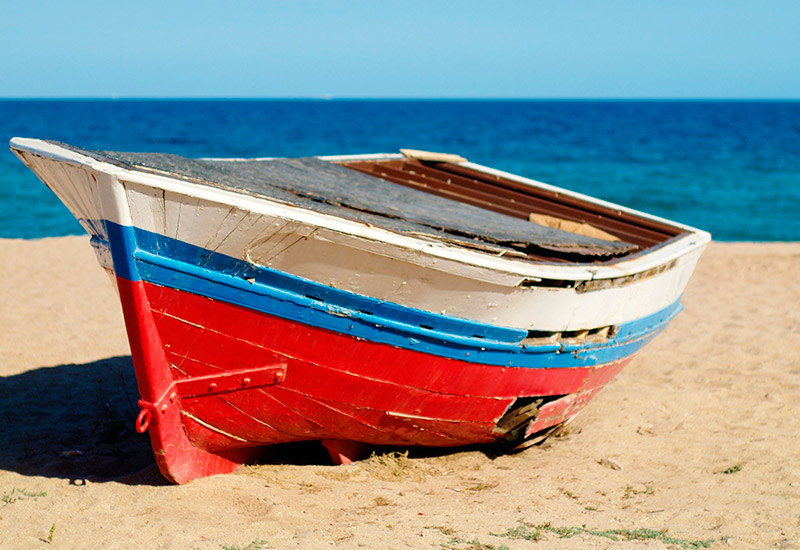
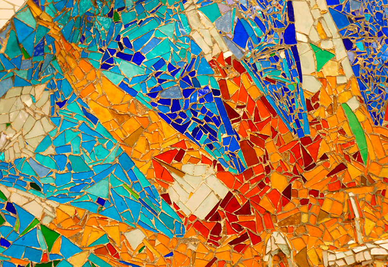
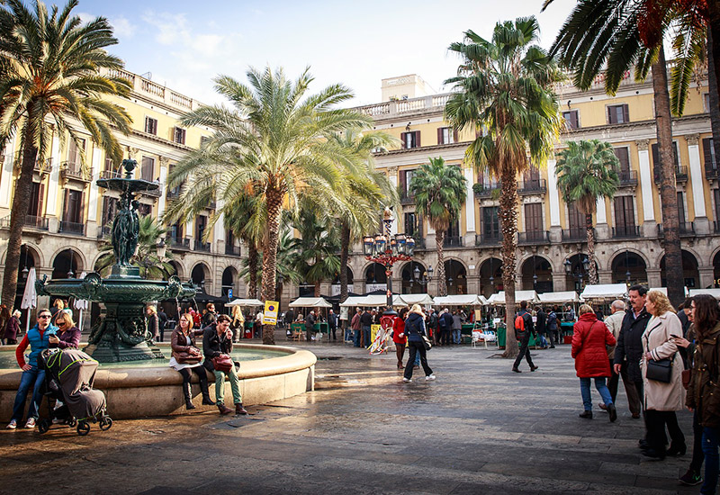
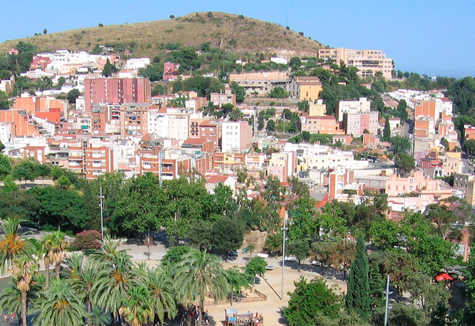
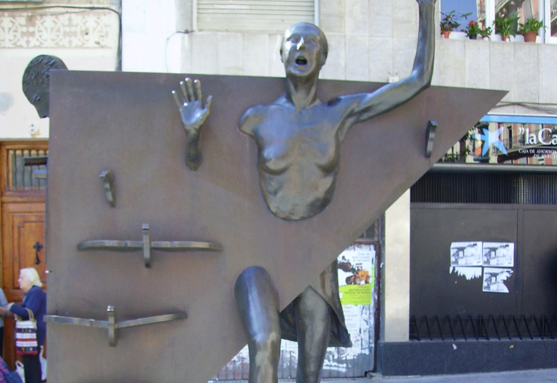

Barcelona: passejar per conèixer-la
Estiu 2022
Passejades Culturals

Barcelona medieval

Barcelona marinera

Ruta modernista
Barcelona literària
Recorre els indrets de Barcelona on es desenvolupen les històries de conegudes obres literàries.

L'ombra del vent de Carlos Ruiz Zafón

Últimas tardes con Teresa de Juan Marsé

La Plaça del Diamant de Mercè Rodoreda